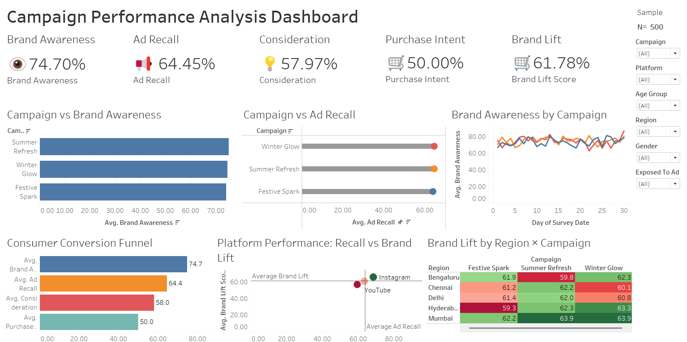

Brand Lift Analysis Dashboard
THE PROBLEM
Marketing teams often run brand campaigns across multiple audiences without a fast, visual way to see how each one is actually performing. Awareness, ad recall, consideration and purchase intent typically live in separate reports, making it slow to spot where a campaign is working and where it isn't.
SOLUTION
I built an interactive Tableau dashboard that brings Brand Awareness, Ad Recall, Consideration and Purchase Intent together in one view. Marketing teams can filter by audience segment, compare campaign performance side by side, and immediately see where lift is strongest and where there's room to optimise.
APPROACH
Starting from campaign survey data, I structured the metrics into a single tracking framework, then designed the dashboard around the questions a marketing team actually asks: is awareness moving, is the message being recalled, and is it converting into intent to purchase. The layout prioritises quick comparison over dense detail.
TOOLS USED
- Tableau
- Brand Tracking Data
- Marketing Analytics
- Consumer Insights
